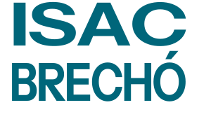
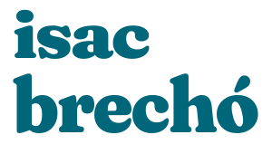
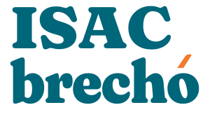
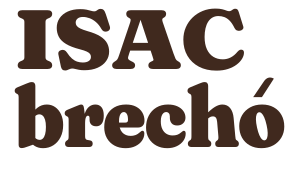

ISAC BRECHÓ / PROPOSTA DE IDENTIDADERoupa circula.
Identidade fica.
Uma marca próxima da comunidade, com presença tipográfica e cores do projeto. Proposta de design; nome e vínculo institucional a confirmar.
Três caminhos, uma direção.
A / Urbana compacta

Caixa alta e largura uniforme. Boa leitura e caráter direto, mas menor distinção em relação a outras marcas de comércio.
B / Curvas acolhedoras

Ritmo orgânico e tom informal. ISAC tem menos presença; o contraste entre as palavras deixa o nome mais fragmentado.
C / Direção recomendada

ISAC em caixa alta, brechó em curvas encorpadas, alinhamento à esquerda e espaçamento compacto. O acento laranja pertence ao nome e funciona como assinatura de cor.
Uma marca, diferentes aplicações.
Principal
Reversa

Uma cor

Horizontal
Para faixas baixas e materiais de comunicação.
Leitura em escala real.
120 px / mínimo digital
150 px
180 px
Ícone derivado do lettering
16 px 32 px
O “i” minúsculo conserva o ponto e as curvas da família tipográfica. Uso restrito a favicon; não substitui o nome em materiais de apresentação.
Distribuição de cores
#00667A#F27B2D#FF9B5A#F1EBCB#40291E
Azul na assinatura principal; laranja apenas no acento. Creme e pêssego na reversa. Branco e #FAF9F5 deixam a interface respirar.
Regras de uso
| Proteção | Reserve em cada lado uma distância equivalente à altura do ponto do “i” da versão reduzida, ou 12% da altura da assinatura. |
|---|
| Tamanho mínimo | 120 px de largura na principal; 200 px na horizontal. Ícone a partir de 16 px. |
|---|
| Evitar | Esticar, inclinar, trocar cores por letra, remover o acento, aplicar sombra ou colocar sobre fotografias sem área de contraste. |
|---|
| Arquivo editável | SVGs com caminhos vetoriais agrupados por linha. Importáveis no Figma e editores vetoriais, sem fontes externas. |
|---|
| Origem tipográfica | Fraunces: SIL Open Font License 1.1. Estudo A: Instrument Sans, mesma licença. Licenças incluídas na pasta da marca. |
|---|
Arquivos
Ver aplicação no site →